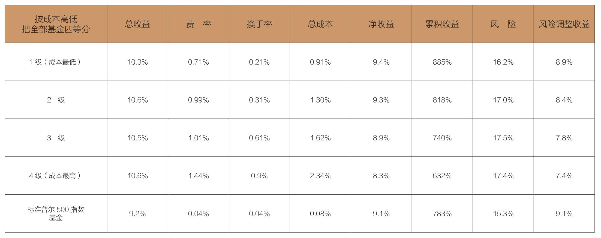

在选择基金时，是应该依赖过往业绩，还是应该更加关注持有成本呢？
年1.5%的差异看似不多，但10年累计收益率却相差223%，你还敢无动于衷吗？
几乎所有基金专家，无论是财务顾问、金融媒体还是投资者，挑选基金时都非常看重过往业绩，甚至完全不参考其他信息。但过往业绩只能告诉我们过去发生了什么，无法告诉我们即将发生什么。就像各位即将学到的，强调基金的过往业绩非但没有帮助，甚至经常会适得其反。常识告诉我们：基金业绩总会起起伏伏。
但还是有一些东西值得我们牢记：在选择基金时，不该过分依赖过往的业绩；你应该更加注重影响基金业绩的持续性因素：共同基金的持有成本。只有成本是永恒的。
这些成本包含什么呢？最常见，且最广为人知的一项成本是基金费。这部分的收费标准变化不大。有些基金的费率可能会随着资产规模的扩大而降低，但是与资产增长的幅度相比，下降幅度相对有限，因此，高成本基金一般都会保持高成本属性（最高成本档的基金的平均费率是2.4%）。与此同时，较低成本基金依然保持较低的成本（成本位于第四档的基金的平均费率是0.98%），为数不多的超低成本基金继续保持超低水平的费率（最低成本档的基金的平均费率是0.32%）。第五档（平均费率是1.1%）和第六档（平均费率是1.24%）的基金，也趋于维持各自的收费标准。
股票基金持有者的第二项重要成本是每次购买基金时支付的手续费。手续费一直存在，但基金的公开数据很少提及它。收费基金很少会变为免费基金，反之亦然（按照我的记忆，自从先锋基金在1977年史无前例地把收费基金转为免费基金后，还没有其他大型基金有过这样的举措）。
基金投资者承担的第三项重要成本来自投资组合买卖证券的成本。只要发生证券交易，就会产生成本。按照我们的估计，如果每次买入和卖出的换手成本约为交易额的0.5%，这就意味着，如果基金组合的换手率为100%，那么投资者承担的成本约为资产总额的1%。同理，50%的换手率对应的成本率为0.5%，10%的换手率对应的成本率为0.1%，以此类推。
根据经验：基金承担的换手成本等于换手率的1%。2016年，股票共同基金投资组合证券买卖总额达到6.6万亿美元，相当于普通股票资产总额8.4万亿美元的78%。这些交易累计产生的成本约为660亿美元，相当于普通股票资产总额的0.8%。
大多数关于基金成本的比较，通常都只是会关注基金对外公布的费率，而且费用越高，基金收益越低。这种情况不只存在于股票基金中，也适用于晨星（Morningstar，普通投资者评估基金表现时最信赖的评级机构）划分的9类基金组合（大盘股基金、中盘股基金和小盘股基金，每种基金又细分为成长型、价值型和综合型）。
少数独立机构在进行比较时，考虑了基金组合换手带来的附加成本。如果把所有基金按换手率平均划分为四级的话，换手率排在后1/4的基金的表现总是优于排在前1/4的基金。
在计算每只基金的费率时，如果加上估算的换手成本，就更能体现出成本与收益间的关系。综合两种成本，我们发现，主动型股票基金的年度总成本占基金资产的0.9%～2.3%（见表5-1，此处未计算手续费）。
成本会带来显著影响！表5-1显示，成本最低的基金和成本最高的基金，平均费率相差1.43%。这个成本差异在很大程度上解释了它们在收益上的差异。在过去25年，成本最低的基金的净年收益率为9.4%，而成本最高的基金的净年收益率却只有8.3%。因此，降低成本就可以提高收益。
表5-1 股票共同基金的收益与成本，1991—2016年

注：成本包括费率和预计的换手成本，但不包括销售佣金。上述成本加上每一组的净收益即为总收益。
请注意，如果把四级基金的成本加回到基金净收益当中，那么所有基金的总收益就会几乎相同：最高为10.6%，最低为10.3%。因此，成本的差异基本能够帮助我们解释各类基金年度净收益的不同。
除此以外，还有一个显著差异：随着成本的上涨，风险也在增加。如果用年收益的波动值衡量风险，那么可以看到，成本最低的基金蕴含的风险（16.2%）明显高于成本最高的基金（17.4%）。考虑到风险对收益的抵减作用，经过风险调整后，成本最低的基金的年度净收益率为8.9%，比成本最高的基金的年度净收益率（7.4%）足足高出1.5%。
1.5%的差异看似不多，但如果经过长时间累积，差异将变得十分明显。成本最低的基金的累计收益率为855%，而成本最高的基金的累计收益率为632%，前者是后者的1.35倍。这完全是由成本差异造成的。
换句话说，10年之后，成本最低的基金的价值可以增加8倍多，而成本最高的基金的价值则只能增加6倍多。毫无疑问，“到低成本池塘去里钓鱼”肯定会赚得更多，从而使选择不同成本的基金的投资者的收益产生巨大差距。请允许我再一次强调，成本真的至关重要！
我们夸大了成本的重要性了吗？我认为并没有。以下几段文字来自晨星一位倍受尊敬的分析师，除了可以确认我的结论，还值得参考：
在共同基金这一领域，费率绝对能够帮助你作出更好的决策。就目前我们所测试的任何情况及时间，低成本基金的表现都优于高成本基金。
费率是评估基金绩效非常有用的参考数据。在所有资产类别里，跨越所有时间段，成本最低的基金的收益总是高过成本最高的基金。
投资者应该把费率当作选择基金的首要评估指标。它是最值得信赖的业绩预测器。
如果你已经相信成本至关重要，并且已经决定购买成本最低的基金，那么你显然没有必要购买主动型基金。在所有基金中，传统指数基金成本最低。1991—2016年，其平均年费率仅为0.1%。由于换手成本难以度量，因此，指数基金的总成本就只有这0.1%的年费。标准普尔500指数基金的年总收益率为9.2%，净收益率为9.1%。此外，由于它的风险低于上述四级基金（价格的年平均变动率为15.3%），调整风险后的收益率为每年9.1%，这比表5-1中成本最低的基金8.9%的收益率还高出0.2%。
需要注意的是，在过去25年，指数基金调整风险后9.1%的年收益率十分可观。而主动型基金的收益率则一直被夸大。我们的统计只包含那些表现够好、能够持续生存的基金。如果针对“幸存者偏差”进行调整，主动型基金的平均收益率会从9.0%下降到7.5%。
另外，如果选择指数基金，你就不必像大海捞针一般，到处去寻找表现好的主动型基金，并期待它们能长期保持优异表现。
正如晨星的建议，如果投资者想要依赖单一指标选择未来表现优异的基金，避开表现差劲的基金，那么基金成本是最好的选择。各种资料都清楚表明，基金经理人和经纪人拿走的越多，投资者剩下的就越少。如果基金经理人无法从中获利，投资者就可以取得全部市场收益。
早在1995年，CNBC商业新闻的责任编辑泰勒·马西森（Tyler Mathisen）就已经开始认识到共同基金的成本的重要性。他明白费率、换手成本，以及非必要的税金会严重侵蚀基金持有者的收益。马西森后来成为《货币》（Money）杂志的主编，并十分认可低成本、低换手率，且具有节税效应的指数基金：
“近20年来，先锋集团的总裁约翰·博格先生一直在宣扬指数基金的优点——这种投资组合旨在模仿整体的市场。数以百万计的基金投资者把他的话当作耳边风。
“我们当然能够明白指数基金的一些内在优势，比如年费低、换手率低、交易成本低。此外，由于指数基金换手率低，不需要实现账面获利，因此，它支付的税金也远少于主动型基金。
“好吧，约翰，我们都错了，只有你才是真正的最终赢家。能够坐享平均收益率就已经足够好了，至少对很大一部分的股票和债券投资者而言是这样的。
“事实上，通过指数基金锁定市场平均水准的报酬，往往可以使投资者们有机会获得平均水准以上的报酬，其表现也往往优于主动型股票或债券的投资组合。这就是如今基金投资领域呈现出的矛盾：获得平均水准的收益，是投资者所能达成的最好结果。
“到了现在，我们终于醒悟过来了。我们开始接受约翰·博格先生始终坚持的基金投资策略：对绝大多数投资者的基金投资组合而言，指数基金应该成为其核心。”
感谢你，泰勒！